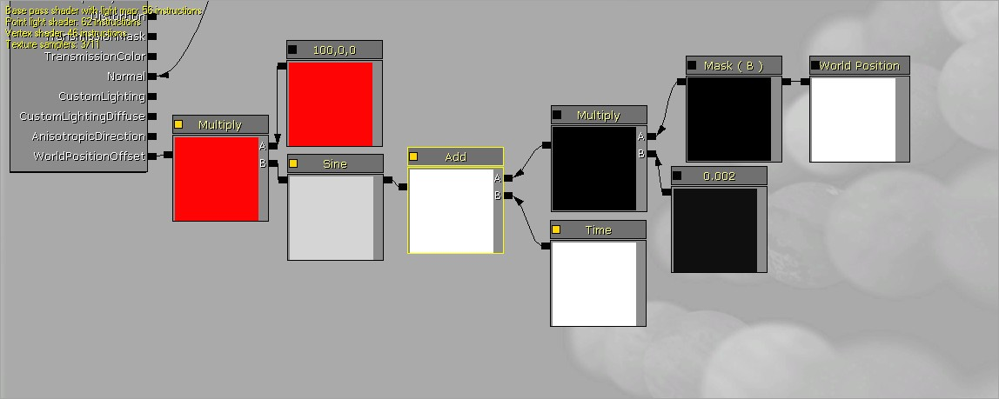

UDN
Search public documentation:
WorldPositionOffsetKR
English Translation
日本語訳
中国翻译
Interested in the Unreal Engine?
Visit the Unreal Technology site.
Looking for jobs and company info?
Check out the Epic games site.
Questions about support via UDN?
Contact the UDN Staff
日本語訳
中国翻译
Interested in the Unreal Engine?
Visit the Unreal Technology site.
Looking for jobs and company info?
Check out the Epic games site.
Questions about support via UDN?
Contact the UDN Staff
월드 포지션 오프셋 (World Position Offset)
문서 변경내역: Daniel Wright 작성. 홍성진 번역.
개요
월드 포지션 오프셋은 아티스트가 머티리얼 에디터에서 버텍스 월드 포지션을 고칠 수 있는 기능으로, 임의의 기형(deformation) 효과와 각기 다른 오브젝트 종류에 대한 커스텀 배경(ambient) 애니메이션이 허용됩니다.
작동법
월드 포지션 오프셋 입력에 꽂을 때마다 단순히 버텍스의 위치가 추가되게 됩니다. 예로 아래는 메시의 아래쪽 Z축을 따라 계속해서 움직이는 사인 곡선을 만들어내는 노드로 그 버텍스를 X축으로 오프셋시킵니다:

기둥 메시에 적용된 해당 머티리얼의 효과입니다: 복잡한 걸 만들기 전에 벡터 연산과 지오메트리를 좀 더 가다듬는 것이 좋을것입니다.
도움이 될만한 참고 페이지입니다:
복잡한 걸 만들기 전에 벡터 연산과 지오메트리를 좀 더 가다듬는 것이 좋을것입니다.
도움이 될만한 참고 페이지입니다:
버텍스 셰이더
월드 포지션 오프셋 머티리얼 입력은 버텍스 셰이더에서 실행됩니다. 이는 픽셀 셰이더에 적용되는 기타 머티리얼 입력과는 전혀 다릅니다. 머티리얼 에디터에 노출된 다수의 머티리얼 노드 는 버텍스 셰이더에서 작동하지 않으며, 특히나 텍스처 룩업을 포함하는 경우에는 더욱 그렇습니다. 이 노드는 "Invalid node used in vertex shader input!"(버텍스 셰이더 입력에 사용불가능한 노드입니다!) 같은 에러를 뿜어내게 될 것입니다. 모든 매쓰 함수는 WorldPosition, VertexColor 및 Time과 ObjectPosition과 같은 대부분의 상수와 함께 작업할 수 있습니다. 버텍스 셰이더에서의 연산 결과는, 버텍스만 기형화(deform)되기 때문에 메시의 테셀레이션이 중요하다는 것입니다. 위의 이미지에서 확인할 수 있습니다. 뭔가를 월드 포지션 오프셋에다 연결하면 머티리얼 에디터 좌상단에 버텍스 인스트럭션이 표시되어 만들고 있는 버텍스 셰이더의 비용을 알아볼 수 있습니다.
쓸만한 머티리얼 표현식
노드 전부에 대한 설명은 머티리얼 개론 페이지를 참고하시기 바랍니다.
- WindDirectionAndSpeed (바람 방향과 속도) - 레벨의 각기 다른 오브젝트간의 바람 애니메이션을 조화시키는 데 사용하는 노드입니다.
- RotateAboutAxis (축 주변 선회) - 축 주변 선회를 간단히 만들어 주는 도우미 노드입니다.
- FoliageNormalizedRotationAxisAndAngle (정규화된 잎사귀 회전축 및 각) - InteractiveFoliageActor (상호작용 잎사귀 액터) 와 함께 사용하여 보다 대화형 레벨을 만드는 데 사용합니다.
버텍스별로 변하는 입력
WorldPosition은 버텍스간의 변화를 주는데, 예를 들어 잔디밭에 일렁이는 바람 파도같은 것에 좋습니다. VertexColor는 메시의 각기 다른 부분에 임의의 가중치를 적용하는 데 좋습니다. 메시 페인트 툴 을 사용하여 버텍스 영향력을 칠할 수도 있으며, 애니메이션에 영향을 끼치게 만들 수도 있습니다. 좋은 접근법은 나뭇잎 별로 사인 곡선 단계가 변하는 나뭇잎 뭉치별로 다른 색을 적용하고서, 다른 채널에다가 각 버텍스가 얼마나 움직일 수 있는지 가중치를 칠하는 것입니다. 2009년 12월 QA 승인 빌드 이후로 WorldNormal 노드를 사용해서 버텍스의 월드 공간 법선에 접근해 볼 수 있습니다.버텍스별로 불변인 입력
WindDirectionAndSpeed는 레벨에 놓은 (실행시간에 바뀔 수 있는) 바람 액터로부터 바람 파라미터를 구하기 좋습니다. ObjectWorldPosition은 오브젝트별 다양성을 추가하기에 좋습니다. 물론 Time도 시간에 따른 순차적 애니메이션에 좋습니다.퍼포먼스 고려사항
월드 포지션 오프셋은 버텍스 셰이더 코드를 생성하며, 버텍스별로 한 번씩 실행됩니다. 노드를 연결하거나 끊어 보면서 버텍스 셰이더의 인스트럭션 수를 비교해 보면 얼마나 많은 인스트럭션이 추가되는지 알아볼 수 있습니다. 실제 영향을 알아보려면 대상 플랫폼에 레벨을 설정한 다음 PerfHUD 또는 PIX같은 툴을 사용하여 월드 포지션 오프셋을 포함 또는 제거한 상태로 프로파일링해 보시기 바랍니다.
제한 사항
월드 포지션 오프셋은 CPU 상의 버텍스 위치에 접근하는 것과는 작동하지 않습니다. 즉 데칼이나 그림자 볼륨같은 기타 효과와 함께라면 제대로 렌더링되지 않는다는 뜻입니다. 충돌이나 물리에 영향을 끼치지도 않으며, 순수히 시각적인 효과이므로, 크게 오프셋시키려면 이런 방법을 통해서 보다는 물리를 대신 사용하는 편이 낫습니다. 경고 - 오브젝트의 경계 밖 위치로 오프셋하면 렌더링 부작용이 생깁니다! 에디터에서 경계 표시를 켜고 오브젝트를 선택해 보면 컬링에 사용되는 경계를 볼 수 있습니다. 2010년 5월 QA 승인 빌드에서, 크게 기형화(deformation)된 메시의 경계를 늘릴 수 있는 BoundsScale 이라는 속성이 프리미티브 콤포넌트에 추가되었습니다.